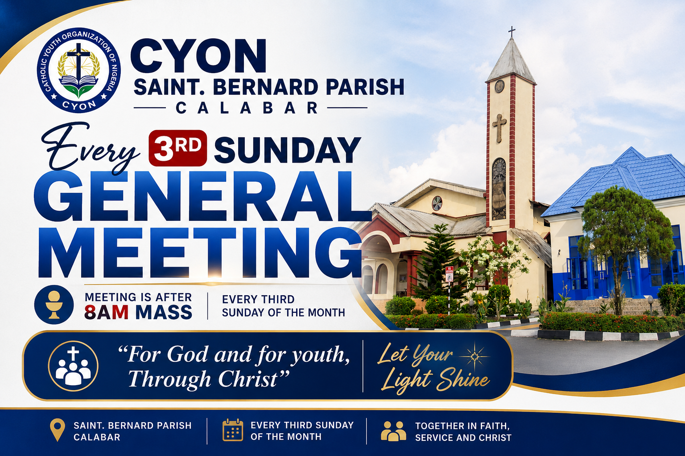
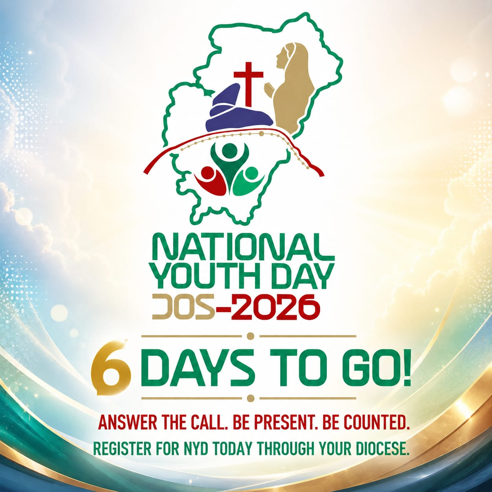

Saint Bernard's Parish, Marian Hill, Calabar
Let Your Light Shine ✨
Growing in faith, friendship, and service to God and our community.
Learn More
Every third Sunday at the Nursery School Block after 8am Mass.

Registration for NYD Jos 2026 is ongoing. Interested members should register through their respective dioceses before the deadline.
Registration closes next week.
Click to view details about the talent event.
The Catholic Youth Organization of Nigeria (CYON), St. Bernard’s Parish, Marian Hill, Calabar, is a vibrant community of young Catholics committed to spiritual growth, leadership, unity, and service. Through prayer, fellowship, outreach programs, talent development, and youth-centered activities, we strive to build responsible Christian leaders who positively impact both the Church and society. Guided by our motto, “For God And For Youth — Through Christ!”, we continue to encourage young people to live out their faith boldly while growing in friendship, discipline, and purpose.
Phone: +234 803 974 7271
For further inquiries, contact the President:
Chat on WhatsAppFollow us on social media: